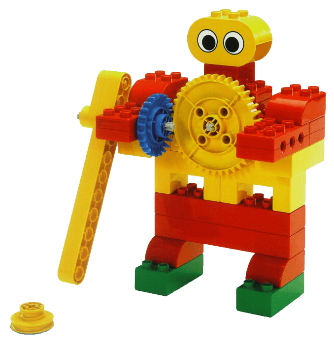

Sam es un gran jugador de hockey sobre hielo y Sara es muy buena en el ataque. Han organizado un partido de
hockey sobre hielo contra el mejor equipo de hockey de la escuela.
Sara cree que el mayor problema de su equipo es hacer los complicados tiros largos. Para ser invencibles,
Sara dice que todo lo que necesitan es tener un tercer miembro del equipo que esté en el centro del campo y
que haga buenos tiros largos. ¡Sam cree que es una idea excelente!
¿Puedes ayudar a Sam y Sara a construir un tercer miembro del equipo que se bueno en tiros largos?
¡Veamos cómo se hace!
• Gira el asa situada en la parte trasera del jugador de hockey sobre hielo para asegurarte de que los brazos
se balanceen libremente
• Coloca una polea amarilla frente al brazo, gira el asa situada en la parte trasera y acciona la polea
• Si el brazo no acciona la polea, comprueba si lo has construido siguiendo las instrucciones de construcción

• Mide y marca tus zonas de tiro a distancias de 30 y 50 cm
• Haz un arco utilizando ladrillos

Marcar tantos a distancia puede ser difícil. Averigua el nivel de dificultad que tendria el jugador de hockey
sobre hielo para marcar un tanto.
Predice primero a qué distancia sería fácil y a qué distancia sería difícil que el jugador de hockey sobre
hielo marcase un tanto. Escribe tus predicciones utilizando las palabras de la hoja de trabajo.
A continuación, prueba qué difícil es marcar tantos desde ambas distancias. Escribe tus hallazgos utilizando
las palabras de la hoja de trabajo.

• ¿Qué has predicho que ocurriria y por qué?
• Describe lo que ha ocurrido.
• ¿Como te aseguraste de que las pruebas fuesen imparciales?
¿El jugador de hockey sobre hielo lanzó siempre desde la misma posición?
• Describe cómo funciona el modelo.
Averigua qué puede lanzarse más lejos: uno o dos ladrillos.
Intenta primero predecir qué puede lanzarse lejos y qué puede lanzarse más lejos: uno o dos ladrillos.
Escribe tus predicciones utilizando las palabras de la hoja de trabajo.
A continuación, prueba para ver si lo que ocurre es lo que has predicho.
Escribe tus hallazgos utilizando las palabras de la hoja de trabajo.